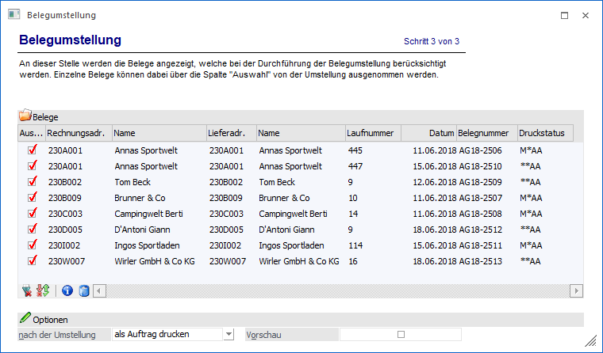
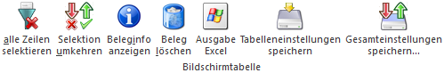
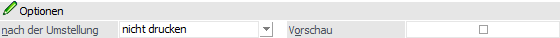
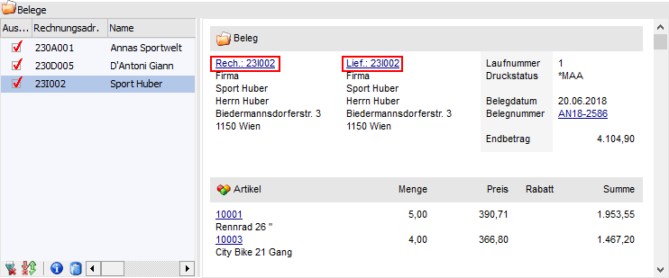

In dem dritten Bereich der Belegumstellung werden alle Belege, gemäß der zuvor getroffenen Selektion, dargestellt. Ob ein Beleg umgestellt erstellt werden soll oder nicht kann mit Hilfe der Tabelle "Belege" manuell entschieden werden.

In der Tabelle stehen folgende Einstellungen zur Verfügung bzw. werden folgende Informationen angezeigt:
Ø Auswahl
An dieser Stelle kann entschieden werden, ob der Beleg umgestellt werden soll oder nicht.
Ø Rechnungsadr. / Name
In diesen Spalten werden die Kontonummern und die Namen der Rechnungsadresse von den Belegen angezeigt.
Ø Lieferadr. / Name
In diesen Spalten werden die Kontonummern und die Namen der Lieferadresse von den Belegen angezeigt.
Ø Laufnummer / Datum / Belegnummer / Druckstatus
In diesen Spalten werden die Daten der Belege ausgewiesen.
Tabellenbuttons

Ø alle Zeilen selektieren
Mit Hilfe des Buttons "alle Zeilen selektieren" werden alle Belege in der Tabelle selektiert.
Ø Selektion umkehren
Durch Anwahl des Buttons "Selektion umkehren" werden die selektierten Belege deaktiviert und die nicht selektierten Belege aktiviert.
Ø Beleginfo anzeigen
Durch Anklicken des Buttons "Beleginfo anzeigen" wird eine Belegvorschau des ausgewählten Belegs am Bildschirm ausgegeben.
Ø Beleg löschen
Durch Anwahl des Buttons "Beleg löschen" werden alle ausgewählten Belege gelöscht bzw. storniert. Nähere Informationen bezüglich des Stornierens eines Beleges entnehmen Sie bitte dem WinLine FAKT2 - Handbuch, Kapitel Beleg stornieren.
Ø Ausgabe Excel
Durch Anwahl des Buttons "Ausgabe Excel" wird der Inhalt der Tabelle an Microsoft Excel übergeben.
Ø Tabelleneinstellungen speichern
Die Spalten einer Tabelle können grundsätzlich an beliebige Positionen verschoben, bzw. in der Breite entsprechend angepasst werden. Durch Anwahl des Buttons "Tabelleneinstellungen speichern" werden die Einstellungen benutzerspezifisch gespeichert und bei dem nächsten Aufruf des Programmpunktes wieder vorgeschlagen.
Ø Gesamteinstellungen speichern
Im Gegensatz zu "Tabelleneinstellungen speichern" können mit "Gesamteinstellungen speichern" mehrere Tabellenaufbauten gespeichert und nach Wunsch geladen werden. Zusätzlich werden Sonderfunktionen der Tabelle (z.B. "Spalte gruppieren") ebenfalls bei der Speicherung bedacht.
Optionen

Die hier angebotenen Optionen werden benutzerspezifisch gespeichert und sind kein Bestandteil der Vorbelegung.
Ø nach der Umstellung
Aus der Auswahlliste kann jene Stufe gewählt werden, in der die geänderten Belege gedruckt werden sollen. Dazu wird nach der Umstellung das Fenster "Belegdruck" geöffnet und die umgestellten Belege, sofern die Kriterien für den Stapeldruck erfüllt sind (Beleg ist in der ausgewählten Stufe freigegeben, Beleg hat als Druckstatus "A" oder "D" in der ausgewählten Belegstufe) zum Druck vorgeschlagen. Ebenso steht die Auswahl "nicht drucken" zur Verfügung.
Ø Vorschau
Durch Aktivierung der Option "Vorschau" wird neben der Tabelle eine Info des aktuell gewählten Belegs angezeigt. Wenn als Rechnungs- oder Lieferadresse ein Interessent vorhanden ist, so wird in der Vorschau eine DrillDown angeboten, durch welchen beim Anklicken der Kontonummer der Interessentenstamm geöffnet wird.

Die ist vor allem für die Belege aus der WEB Edition wichtig. So kann der Bearbeiter sehen, welche Belege erfasst wurden und für welche Interessenten. Die Belege könne so freigegeben werden und über den DrillDown kann sofort in den Interessentenstamm gewechselt werden um dort den Interessenten in ein Personenkonto umzuwandeln (nähere Informationen entnehmen Sie bitte dem WinLine FAKT1 - Handbuch Kapitel "Umwandlung zum Personenkonto").